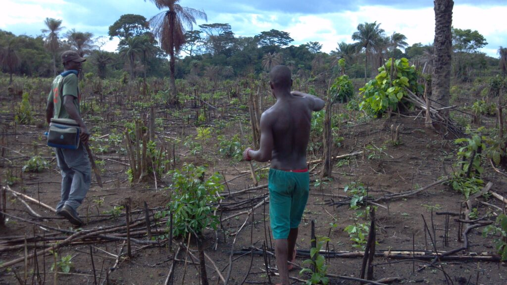

Unlocking Potential Through Strategic Action
Youth unemployment remains one of Sub-Saharan Africa’s most pressing challenges.
With over 60% of its population under 25, the region holds a wealth of untapped human potential.
However, young people often face obstacles that prevent them from accessing quality jobs or starting their own enterprises.
By focusing on education, skills development, and expanding economic opportunities, organizations like AYM, Inc. can play a crucial role in creating sustainable solutions.
The Youth Employment Crisis in Sub-Saharan Africa
Africa’s youth are eager to contribute to their communities and economies, but many are stuck in low-paying or informal jobs.
The World Bank’s report outlines several factors contributing to this issue, including inadequate education systems, limited access to financial resources, and underdeveloped job markets. Additionally, agriculture—Africa’s largest employer—often offers low productivity and unattractive working conditions, despite its potential for growth.
As governments and organizations focus on long-term solutions, AYM, Inc. can step in to support short-term strategies that prepare youth for the labor market. This includes equipping them with essential technical skills, encouraging entrepreneurship, and connecting them to the resources needed to grow small businesses.
Key Sectors for Youth Employment Growth
There are three main sectors with untapped potential for youth employment in Sub-Saharan Africa: agriculture, household enterprises, and the wage employment sector.
- Agriculture as a Career Path
While many young Africans view farming as a last resort, agriculture has tremendous potential for job creation. Transitioning farming into a more dynamic, technologically advanced industry can attract young workers, increasing both productivity and income. Investment in modern agricultural techniques, infrastructure, and access to markets will help unlock this sector’s potential.
AYM, Inc. can contribute by fostering agricultural entrepreneurship among youth. This includes offering training in sustainable farming practices, providing access to necessary tools and resources, and connecting them with agricultural markets. These initiatives can help transform perceptions of agriculture as a viable career path and ensure the youth play a role in Africa’s food security.
- Boosting Household Enterprises
Household enterprises (HEs) are a critical component of Sub-Saharan Africa’s economy, particularly in rural areas. These small, informal businesses provide income for millions of young Africans who are unable to secure formal jobs. The World Bank suggests that national strategies should focus on improving the productivity of these enterprises by facilitating access to finance, improving business skills, and creating a supportive policy environment.
AYM, Inc. could support the HE sector by offering training programs focused on financial literacy, business management, and market access. By equipping youth with the right skills, they can turn their small businesses into more productive and sustainable ventures.
- Increasing Opportunities in Wage Employment
Modern wage employment is the key to long-term growth in Africa, but this sector is currently underdeveloped. According to the World Bank report, only 3% of Sub-Saharan Africa’s workforce is employed in manufacturing. Expanding wage employment opportunities, particularly in high-growth industries like technology, healthcare, and renewable energy, is essential for the future of the region.
Partnerships between the private sector, government, and NGOs are crucial in promoting job growth. AYM, Inc. can work alongside these partners to ensure young people gain access to the training and apprenticeships needed to succeed in the wage employment sector.
Overcoming Barriers to Youth Employment

One of the most significant barriers to youth employment in Sub-Saharan Africa is the lack of quality education. Many young people are unable to develop the skills needed for modern job markets because of poor education infrastructure. Improving education systems and expanding access to technical and vocational training are essential steps for addressing this challenge.
Furthermore, financial barriers prevent many young Africans from starting businesses or pursuing further education. AYM, Inc. can help by advocating for policies that improve access to microfinancing and offering scholarships or grants to deserving youth.
AYM, Inc.’s Role in Empowering Youth
AYM, Inc. is well positioned to be a change-maker in addressing youth unemployment in Sub-Saharan Africa. By focusing on skills development, entrepreneurship, and access to resources, AYM, Inc. can help young people overcome the barriers that prevent them from achieving economic independence.
Moreover, AYM, Inc. can play a pivotal role in advocating for policy changes that promote youth employment. Working alongside governments and other NGOs, AYM can push for reforms in education, financial systems, and labor markets, ensuring that young people are better equipped for the future.
Conclusion
Sub-Saharan Africa’s youth hold the key to the continent’s future growth and prosperity.
Addressing the challenge of youth unemployment requires a multi-faceted approach that includes improving education, expanding access to financial resources, and creating more opportunities in agriculture, household enterprises, and the wage employment sector.
Through strategic interventions and partnerships, AYM, Inc. can contribute to unlocking the full potential of Africa’s young workforce. By empowering youth today, we can pave the way for a brighter, more prosperous tomorrow.